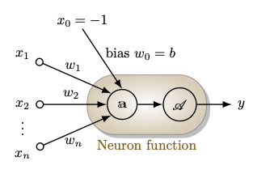
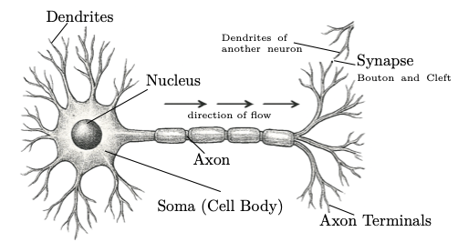
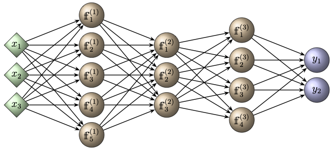
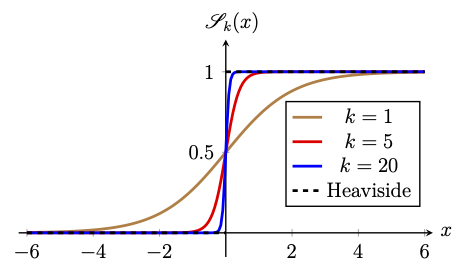
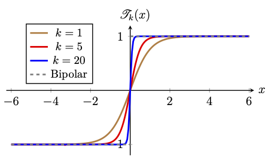
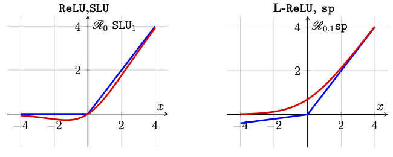

Chapter 1: Feed Forward Architecture
Artificial Intelligence (AI) is a subject that focuses on creating smarter machines to support humans in their work. These machines can be used as tools across diverse areas of science, engineering, and technology. The ultimate goal is to assist humans in their studies, research, business, and other daily activities, making processes smoother, more efficient, and more productive.Machine Learning (ML) is a part of AI that has been of great interest in recent years, which deals with developing models capable of learning from input data and performing tasks with minimal human intervention. Artificial Neural Networks (ANNs) are a particular type of ML models whose basic fundamental architecture is inspired by the structure of a human brain and are particularly effective at handling complex patterns, large amounts of data, and high-dimensional inputs such as images, audio, and text.
Often, traditional ML models require manual feature extraction, which becomes challenging when the input data is high-dimensional or large in volume. On the other hand, since ANNs can automatically learn complex features directly from raw data, they are powerful tools for unstructured data sets. They are often viewed as black-box tools, because it is difficult to understand what a trained network has learned or why it produces a particular output for a given input. However, mathematical analysis of ANN architectures reveals some useful information, such as their expressivity in approximating a rich class of functions. Such analysis relies heavily on knowledge of fields such as algebra, multivariate calculus, probability theory, and optimization.
The basic unit of an ANN is the neuron or node. Each neuron takes a vector of inputs, processes it through an affine map and an activation function, and passes the resulting scalar output to the neurons of the next layer. In a typical network, neurons are arranged in layers. The layers of an ANN can be categorized into an input layer, one or more hidden layers, and an output layer. The core process of building a model takes place through the transformations applied in the layers. An ANN that has more than one hidden layer is called a deep neural network. The process of building models using deep neural networks is referred to as deep learning.
A deep learning architecture refers to the way it is structurally constructed into layers, neurons, and connections within the network. It also defines how the model processes the input data and how the final output is obtained. The complexity of the model, efficiency in the learning process, and shaping its ability to solve particular types of problems are determined by the network's architecture.
The most fundamental neural network architecture is the Feedforward Neural Network (FNN). In such networks, information is fed into the input layer, that flows through the hidden layers, and finally emerges as output from the output layer. These networks are typically used for simple classification and regression tasks based on structured or tabular data. There are also other neural networks that are specialized to perform specific tasks, such as Convolutional Neural Networks (CNN) for image recognition, Recurrent Neural Networks (RNN) for sequence prediction, and so on.
The main objective of this course is to develop a rigorous mathematical understanding of deep learning architectures. We start from the elementary building block, the artificial neuron, and understand how neural networks are structured, trained to represent a labelled dataset, and validated. We progressively study the underlying mathematical structure of ANNs by first understanding the geometry of linear separability, then the role of kernels and feature maps, and the optimization principles behind learning algorithms. We also discuss some theoretical results demonstrating how well a neural network can approximate a class of functions.
This chapter lays the foundation for ANNs by providing the mathematical formulation of artificial neurons and giving an explanation of the functionality of biological neurons to justify the term artificial neurons. The chapter ends with an explanation of the process of learning a model from a given dataset.
We start the chapter with the introduction of neuron functions in Section 1.1, where single artificial neurons are introduced in Subsection 1.1.1 and a comparison with biological neuron is discussed in Subsection 1.1.2. Section 1.2 then defines the fully connected feed foward neural networks along with the notion of dimensions in Subsection 1.2.2 and provides a collection of commonly used activation functions in Subsection 1.3. We end the chapter with an overview of learning a network is provided in Section 1.4, where we outline the supervised learning procedure and postpone the details to later chapters.
1.1 Artificial Neurons
An artificial neuron is a mathematical function obtained as a composition of an affine transformation with an activation function. Many such interconnected neurons, arranged in layers, form an artificial neural network. Such artificial neurons are the building blocks of artificial neural networks, and therefore it is important to first understand how they are defined mathematically.1.1.1 Neuron Function
We now formalize the physical intuitions through the mathematical definition of an artificial neuron.An artificial neuron is a tuple \( (\overline{\boldsymbol{w}}, \mathscr{A}) \), where
- \(\overline{\boldsymbol{w}}=(w_0, \boldsymbol{w})\in \mathbb{R}\times \mathbb{R}^{n}\) is the augmented weight vector, with \(w_0=b\in \mathbb{R}\) as the bias and \(\boldsymbol{w}=(w_1,w_2,\ldots,w_n)\in \mathbb{R}^n\) as the weight vector; and
- \(\mathscr{A}:\mathbb{R}\rightarrow \mathbb{R}\) is an activation function.
For a given \(\overline{\boldsymbol{w}}\), the right hand side function is the composition of the affine function \(\text{𝕒}(\,\cdot\,;\overline{\boldsymbol{w}}): \{1\}\times \mathbb{R}^n\rightarrow \mathbb{R}\) given by

Figure 1.1: Schematic of an artificial neuron architecture.
1.1.2 Comparison with Biological Neurons
The mathematical definition of \(\text{𝕗}\) in (1.1) is named as a neuron by taking inspiration from the biological neurons in the brains. To have a clear understanding of these two concepts, we briefly understand the structure and the functionality of biological neurons in the brains and then make a comparison with the artificial neuron formulation.From Definition 1.1, we see that an artificial neuron includes a simple mathematical function (neuron function) with inputs, weights, bias, activation function and output. On the other hand, a biological neuron is a specialized type of cell in the nervous system with dendrites, soma, axon, and synapses. Biological neurons are responsible for transmitting and processing information through electrical and chemical signals.

Figure 1.2: An illustration of a biological neuron. The direction of the flow of information during neurotransmission is indicated by three arrows.
A typical neuron has four main parts (shown in Figure 1.2):
- Dendrites: Branch-like structures that receive input signals from other neurons in the form of chemical signals, specifically neurotransmitters.
- Soma (Cell Body): Contains the nucleus and most of the cell's organelles, where input signals (electrical impulses) are integrated and a nonlinear threshold is applied. If the combined input exceeds this threshold, the axon hillock triggers an action potential, which is then propagated down the axon.
- Axon: A long projection that transmits electrical signals from the soma to other neurons. The axon terminal of one neuron connects to the dendrites of another neuron via synapses.
- Synaptic Boutons: These are the small, bulb-like endings of axon terminals that are involved in transmitting signals to other neurons. When an electrical signal (action potential) reaches a synaptic bouton, it triggers the release of chemical messengers called neurotransmitters into the synaptic cleft, which is a tiny gap between the axon terminal and the dendrite of the next neuron. Electrical signals cannot cross this gap directly, so neurotransmitters are used to carry the signal across.
| Feature | Biological Neuron | Artificial Neuron |
| Structure | Has dendrites, soma (cell body), axon, and synapses | Consists of inputs, weights, bias, and activation function |
| Input | Receives chemical/electrical signals from other neurons | Receives numerical input values \(\boldsymbol{x}\) from other neurons |
| Processing | Integrates input signals and fires when threshold is reached | Computes weighted sum \(\text{𝕒}\) and applies an activation function \(\mathscr{A}\) |
| Output | Action potential transmitted through axon | Scalar value \(y\) passed as output |
Table 1.1: Comparison of Biological and Artificial Neurons
A neuron can connect to many other neurons through its axon terminals, and similarly, it can receive inputs from several neurons via its dendrites, forming a biological neural network. Similarly, multiple artificial neurons can be connected through layers to form an artificial neural network, which we will discuss in a later chapter.
1.2 Fully Connected Networks
In this section, we introduce fully connected feedforward artificial neural networks (also called the Multilayer Perceptrons (MLPs)) as a natural extension of single-neuron models.1.2.1 Multilayer Perceptrons
An artificial neural network (ANN) is a system consisting of layers of connected neurons that defines a parametric function mapping input vectors to output vectors.An ANN is typically organized into three components, namely,
- an input layer that receives the input vectors;
- a set of hidden layers that perform transformations through affine maps and activation functions; and
- an output layer that produces the final prediction or classification.
The multilayered structure of a deep neural network is illustrated in Figure 1.3.

Figure 1.3: Schematic of an ANN with three hidden layers. The leftmost (green) layer is the input layer, that receives the input vector \(\boldsymbol{x}\), and the rightmost (blue) layer corresponds to the output vector \(\boldsymbol{y}\). In the hidden (brown) layers, \(\text{𝕗}^{(l)}_{k}\) denotes the \(k^{\rm th}\) neuron function in the \(l^{\rm th}\) layer, as defined in (1.1).
An artificial neuron can be viewed as a special case of a single-layer neural network with just a single output unit.
1.2.2 Network Function and Dimensions
Having set the structure of ANNs intuitively, we now turn our attention to give the mathematical definition of a fully connected ANN (also called a multilayer perceptron or a densely connected neural network or a feedforward neural network).
For a given \(L\in \mathbb{N}\) and a set of network dimensions \(n_0,n_1, n_2, \ldots, n_L\in \mathbb{N}\), a fully connected artificial neural network of depth \(L\) and width
Here, for each layer \(l=1,2,\ldots,L\), the layer function \( \mathfrak{h}^{(l)}: \mathbb{R}^{n_{l-1}} \rightarrow \mathbb{R}^{n_{l}}\) is the vector-valued neuron function of the \(l^{\rm th}\) layer
Neurons in the hidden and output layers are often referred to as units or nodes. The function \({\mathscr{F}_{L,\hat{n}}}\) is also called the network function.
- Although an ANN function depends on the width of all the layers, our notation \({\mathscr{F}_{L,\hat{n}}}\) only includes the width of the network. We adapt to this convention only for the sake of notational convenience, whereas the dependency of an ANN function is apparent from \(\boldsymbol{\Theta}\).
- Different neurons in the hidden layers can use different activation functions. However, we always consider networks where the activation function in all neurons of a layer is the same.
In a simple notation, we may write
which is a mapping \(\mathbb{R}^{n_0} \ni \boldsymbol{x} \mapsto \boldsymbol{y}\in \mathbb{R}^{n_L}\) obtained by passing the input vector \(\boldsymbol{x}\) successively through the hidden layers, starting from layer \(l=1\) up to layer \(l=L-1\), and finally through the output layer \(l=L\) to obtain the output vector \(\boldsymbol{y}\). Such a network is therefore called a feedforward neural network.
As we mentioned earlier, a fully connected (or densely connected) feedforward neural network defined above is often referred to as a multilayer perceptron (MLP).
1.3 Activation Functions
The learning efficiency and the model performance of an ANN depend crucially on the choice of an activation function. In this section, we introduce a few commonly used activation functions, along with their derivatives which play a central role in the backpropagation algorithm used for training neural networks (discussed in a later chapter). For clarity of exposition, we illustrate them using single neurons.1.3.1 Step Functions
Let us start our discussion with a class of activation functions that is historically important and is discussed in detail in Chapter 2.1.3.1.1 Heaviside function
Unit step function, called the Heaviside function, is referred to as the threshold activation function in the context of deep learning, and is given byIn terms of distributional derivatives, the derivative of the Heaviside function is \(\mathscr{H}' = \delta\), the Dirac measure (a unit mass at 0).
1.3.1.2 Bipolar Function
The bipolar function is called the bipolar activation function and is given byIt is easy to see that \(\mathscr{B}(x) = 2\mathscr{H}(x) - 1\). Therefore, the distributional derivative of \(\mathscr{B}\) is given by \(\mathscr{B}' = 2\delta\).
The threshold and bipolar activation functions are used at the output layer of problems involving binary classification, which we study in the context of perceptrons (see Chapter 2).
1.3.2 Sigmoid Functions
A sigmoid function is a continuously differentiable function \(\mathscr{S}:\mathbb{R} \rightarrow (0,1)\), such that \(\mathscr{S}'>0\) (strictly increasing) and \(\mathscr{S}(s)\rightarrow 0\) as \(s\rightarrow -\infty\) and \(\mathscr{S}(s)\rightarrow 1\) as \(s\rightarrow +\infty\).A commonly used sigmoid function is the logistic function with parameter \(k>0\), defined as
The graphs of the sigmoid function for various values of \(k\) are depicted in Figure 1.4. From the figure, we observe that \(\mathscr{S}_k\rightarrow \mathscr{H}\) pointwise as \(k\rightarrow \infty\) on \(\mathbb{R}\backslash \{0\}\).

Figure 1.4: Graphs of the logistic sigmoid \(\mathscr{S}_k(x)\) for various values of \(k\), illustrating convergence to the Heaviside step function as \(k \to \infty\).
Since we use gradient-based optimization methods (such as the gradient descent method) for learning a neural network, smooth activation functions like the logistic function are preferred over the Heaviside function, which has zero derivative almost everywhere (and is not classically differentiable at the origin). This provides no gradient signal for gradient-based optimization. Moreover, the logistic function maps \(x \mapsto y \in (0,1)\) and hence its output can be interpreted as a probability. This makes it particularly useful in probabilistic models such as logistic regression (discussed in detail in a later chapter).
- Show that
\[ \mathscr{S}_k'(s) = k\,\mathscr{S}_k(s)\big(1-\mathscr{S}_k(s)\big), \qquad s\in\mathbb{R}. \]
- Show that \(\mathscr{S}_k'\) attains its maximum at \(s=0\), with maximum value \(\mathscr{S}_k'(0) = \dfrac{k}{4}\).
- Show that \(\mathscr{S}_k'(s)\rightarrow 0\) as \(s\rightarrow \pm\infty\).
1.3.3 Hyperbolic Tangent Function
The hyperbolic tangent function, also called the bipolar sigmoid function, is a map \(\mathscr{T}_k:\mathbb{R}\rightarrow (-1,1)\) defined as
Figure 1.5: Graphs of the hyperbolic tangent function \(\mathscr{T}_k(x)\) for various values of \(k\), illustrating convergence to the bipolar step function as \(k \to \infty\).
The hyperbolic tangent function is preferred over the bipolar function while learning an ANN using gradient-based optimization methods (such as gradient descent method).
- its output is centered at \(0\) (as opposed to the sigmoid's output, which is always positive), which leads to better-behaved gradient updates during training; and
- its maximum gradient, \(\mathscr{T}_k'(0)=k\), is larger than that of the logistic sigmoid, \(\mathscr{S}_k'(0)=k/4\).
1.3.4 Hockey-stick Functions
Any function whose graph resembles a hockey stick, i.e., an increasing L-shaped curve is a hockey-stick function.1.3.4.1 Leaky Rectified Linear Unit
The leaky rectified linear unit with parameter \(\alpha\in [0, 1)\) is the function \(\mathscr{R}_\alpha :\mathbb{R} \rightarrow \mathbb{R}\) defined asInstead of choosing \(\alpha\in [0,1)\), if we treat \(\alpha>0\) as a trainable parameter, then the activation function \(\mathscr{R}_\alpha\) is called the parametric rectified linear unit.

Figure 1.6: Graph of hockey-stick activation functions.
1.3.4.2 Sigmoid Linear Units
Sigmoid linear units (also called swish) is a smooth function \(\texttt{SLU}_k:\mathbb{R}\rightarrow \mathbb{R}\) defined as1.3.4.3 Softplus Function
Another smooth version of the \(\texttt{ReLU}\) function is the softplus function defined as- \(\texttt{sp}(x) - \texttt{sp}(-x) = x.\)
- \(\texttt{sp}'(x) = \mathscr{S}_1(x).\)
Graphs of hockey-stick functions are depicted in Figure 1.6.
1.3.5 Identity Function
The identity function \(\texttt{Id}:\mathbb{R}\rightarrow\mathbb{R}\), given byIn practice, the identity function is typically used only at the output layer, and only for regression tasks, where the target \(y\in\mathbb{R}\) is a real-valued (unbounded) quantity.
1.3.6 Multi-class Classification
Multi-class classification refers to assigning exactly one class to each input out of a set of more than two possible classes.In a multi-class classification, the outputs (targets/labels) are often categories (discrete class names), such as identifying whether a photograph depicts a cat, or a dog, or a cow. In this case, the output is \(y \in \{\text{`cat'}, \text{`dog'}, \text{`cow'}\}.\) Since neural networks cannot handle symbolic categories directly, the target must be represented numerically. A canonical way of interpreting an \(n\)-class classification numerically is to use one-hot vector encoding, where each class is represented by the \(n\)-dimensional \(i^{\rm th}\) standard basis vector \(\boldsymbol{e}_i=(0,0,\ldots,1,0,\ldots, 0)\) of \(\mathbb{R}^n\), for \(i=1,2,\ldots, n\), with \(1\) appearing at the \(i^{\rm th}\) coordinate. For instance, the above example is a 3-class classification, which can be encoded by the three dimensional one-hot mapping as
1.3.6.1 Softmax Function
In a multi-class classification problem with \(n\) classes, a neural network produces a pre-activation vector of real numbers at the output layer asTo interpret these logits as probabilities of each class, we apply the softmax function as the activation function at the output layer to get the output as \(\boldsymbol{y} = (y_1, y_2, \ldots, y_n)^\top\), where
In general, for a given \(k>0\), we define the parametric softmax as
1.4 Supervised Learning: An Overview
The mathematical formulation of an artificial neural network (ANN) takes \(\boldsymbol{x}\in \mathbb{R}^{n_0}\) as input and computes the output \(\boldsymbol{y}\in \mathbb{R}^{n_L}\) as the value of the network function \({\mathscr{F}_{L,\hat{n}}}(\,\cdot\,;\boldsymbol{\Theta})\). A complete ANN model for a given problem therefore involves a well-defined network function, which in turn includes three choices, namely,- the architecture of the network, i.e., the depth \(L\) and the dimensions \(n_0\), \(n_1\), \(\cdots,\) \(n_L\);
- a suitably chosen activation function for each layer; and
- a fixed choice of the collection of weights and biases \(\boldsymbol{\Theta}\).
1.4.1 Labeled Dataset
The process of obtaining \(\boldsymbol{\Theta}\) is referred to as learning a model (or training a model) from a given dataset \(\mathcal{D} \subset \mathbb{R}^{n_0} \times \mathbb{R}^{n_L}\) of the formLearning from such a labeled dataset is called supervised learning, where the goal is to approximate a function (or a model) that maps inputs \(\boldsymbol{x}_k\) to outputs \(\boldsymbol{y}_k\).
1.4.2 Learning Procedure
A general outline of the learning procedure is as follows:- Data Preparation: As a first step, we decompose the dataset \(\mathcal{D}\) into three disjoint sets,
\[ \mathcal{D} = \mathcal{D}_\text{train} \cup \mathcal{D}_\text{val} \cup \mathcal{D}_\text{test}. \]Here, \(\mathcal{D}_\text{train}\) is the training set, \(\mathcal{D}_\text{test}\) is the test set, and \(\mathcal{D}_\text{val}\) is the valudation set. Typically, \(\mathcal{D}_\text{train}\) contains a significantly larger portion of the data, often at least 70% of \(\mathcal{D}\), selected randomly in an unbiased manner. Let us use the notation\[ \mathcal{D}_\text{train} := \big\{(\boldsymbol{x}_{k}^\text{train},\boldsymbol{y}_{k}^\text{train}) ~|~k = 1,2,\dots, N_\text{train}\big\}, \]where \(N_\text{train} = \#(\mathcal{D}_\text{train})\).
- Training a Model: Consider a suitable cost function (error) \(\mathcal{C}(\boldsymbol{\Theta})\) defined on the training dataset \(\mathcal{D}_\text{train}\). The goal is to find parameters \(\boldsymbol{\Theta}\) that minimize the cost function, i.e.,
\[ \boldsymbol{\Theta}^* = \text{argmin}_{{ \boldsymbol{\Theta}}} \mathcal{C}(\boldsymbol{\Theta}). \]For instance, a commonly used cost function is the mean squared error\[ \mathcal{C}(\boldsymbol{\Theta}) = \frac{1}{N_\text{train}} \sum_{k=1}^{N_\text{train}} \big\| {\mathscr{F}_{L,\hat{n}}}(\boldsymbol{x}_{k}^\text{train};\boldsymbol{\Theta}) - \boldsymbol{y}_{k}^\text{train} \big\|^2. \]An optimization method such as the gradient descent method is used to compute \( \boldsymbol{\Theta}^* \). This step is called the training step or learning step.
Once the optimal parameters are computed by minimizing the cost on the training data, we typically say that the model is trained.
- Evaluating the Model: The next step is to assess how well the trained model performs on unseen data. For this, we compute the cost function on the test dataset \(\mathcal{D}_\text{test}\). If this value is sufficiently small, we say that the model `generalizes well' to unseen data. This step is called testing step. If the model does not generalize well, then we need to apply additional techniques to improve generalization, such as regularization, or early stopping, or collecting more data, or architecture changes.
Regularization generally includes fine tuning some key parameters, referred to as hyperparameters. The validation set \(\mathcal{D}_\text{val}\) is used to tune hyperparameters.